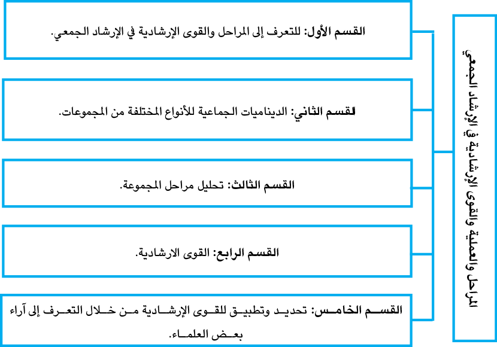

|
تمرُّ المجموعات جميعها بمسارات ومراحل متشابهة يمكنُ التَّنبؤ بها مُسَبَقاً، وهذه المراحل تعكس ديناميكية العمل في المجموعة والعلاقات القائمة بين أفرادها تجاه بعضهم البعض من جهة واتِّجاه الميسر/ة من جهة أخرى، وسرعة الانتقال من مرحلة إلى أخرى يتعلق بالثقة التي تتطور من قبل أعضاء وعضوات المجموعة بين بعضهم البعض من جهة وبين الميسر/ة من جهة أخرى وبنجاعة الاتصال والتواصل بينهم. وتمتاز كلُّ مرحلة بميزات وتحديات خاصة، على المشاركين/ات مواجهتها بوصفهم مجموعةً وأفرادًا، هذه التَّحديات قد تسبب إشكالية لبعض الأفراد، بحسب شخصيَّاتهم وطباعهم وكيفيّة تعامُلهم معَ الظروف الضاغطة، وقد تؤخِّر من انتقالها من مرحلة إلى أُخرى؛ بسبب تلك الاختلافات، ولكنْ على كلِّ مجموعةٍ أنْ تمُرَّ بمراحل تطور ذاتِ مسارٍ متشابهٍ، ولا يمكن الانتقال من مرحلة إلى أُخرى دونَ المرور بنجاح في المرحلة التي سبقتها، تماماً، كما الطفل لا يستطيع أنْ يمشيَ قبل أنْ يستطيعَ الوقوف على قدميه. إنَّ الإرشاد الجماعي هو أحد أساليب التَّدخُّل النَّفسيّ، التي تُستخدَمُ في مختلف المجالات التَّربوية والصحية والاجتماعية، وهو يقدِّمُ فوائدَ كثيرةً للأفراد الذين يبحثون عن حلول لمشكلاتهم أو تحقيق أهدافهم، ولكنْ، لكي يكونَ الإرشاد الجماعي فعَّالاً، يجبُ أنْ يتوافق مع حاجات وخصائص المسترشدين، وأنْ يتبع خطوات ومراحل وضوابط محددة، وأنْ يستخدمَ المرشد استراتيجيات وتقنيات مناسبة لإدارة الجلسات الإرشادية، كما يجبُ أنْ يكونَ المرشد على دراية بالمزايا والعيوب التي قد تصاحب عملية الإرشاد الجماعي، وأنْ يحاولَ تقليل المخاطر وزيادة المكاسب. |
|
|
تسهم معرفة مراحل تكوين الجماعة في - تحسين مهارات التواصل والتفاوض والتعاون والانسجام مع الآخرين، وزيادة الثقة بالنفس والاحترام المُتبادل. |

2.1 الهدف العام للوحدة الدراسيّة
|
- التَّعرُّف إلى المراحل والعمليَّة والقوى الإرشاديَّة في الإرشاد الجمعيّ، ويكون من خلال: أ. التَّعرُّف إلى مراحل المجموعة. ب. الديناميَّات الجماعيَّة للأنواع المختلفة منَ المجموعات. ت. القوى الإرشاديَّة. ث. القوى العلاجية الخمسة عشر “ جاكسون، ماسون، هارفيل، سكيميل.” |
|
عزيزيَ الطالبَ،وِفقًا للهدف العام للوحدة، وبعد دراستك للوحدة الدراسية، يتوقَّع منك تحقيق النواتج الآتية: 1. امتلاك مهارات للتَّعرُّف إلى المراحل والقوى الإرشادية في الإرشاد الجمعيّ. 2. تحليل مراحل المجموعة. 3. تحديد وتطبيق للقوى الإرشادية من خلال التَّعرُّف إلى آراء بعض العلماء. |
4.1 الموارد والقراءات المساندة
|
عزيزيَ الطالب، : اثناء دراستك لهذه الوحدة، قد تَجِدُ أنَّك بحاجة إلى مزيد من التوضيحات والمعلومات حول ما جاء فيها من أفكار ومفاهيم، فيمكنك الرجوع إلى الموارد والمراجع التالية: 10. مصادر إلكترونية: ●صفحة المقرر الالكتروني: الخطة والعروض التقديمية والوسائط المتعددة. ●الصفوف الافتراضية. 11. مصادر أخرى: ●Psychotherapy: Understanding group therapy: المقال يشرح مفهوم وفوائد وتحديات الإرشاد الجمعي وكيفية اختيار المجموعة المناسبة لك. ●Better Together? 5 Benefits of Group Therapy | Psych Central: هذ ا المقال يستعرض خمس فوائد للإرشاد الجمعي، مثل زيادة التأزير، وتطوير المهارات، وتغيير التفكير. ●Group therapy: benefits and challenges of working with multiple_ clients: هذا المقال يناقش بعض المزايا والتحديات التي تواجه المستشار عند العمل مع عدة عملاء في نفس الوقت، مثل التخطيط، والإدارة، والتقييم. ●Top 25 Advantages and Disadvantages of Group Counseling: هذا المقال يسرد مزايا وعيوب الإرشاد الجمعي، مثل التفاهم، والاستفادة، والاستجابة. 12. مصادر ورقية: كتاب الارشاد الجمعي العلاجي، للمؤلف سعيد حسني العزة، (2010) دار الثقافة والنشر والتوزيع. |
تتناول الوحدة الرابعة موضوعات ومفاهيم أساسيّة في المراحل،والعملية والقوى الإرشادية في الإرشاد الجمعيّ، من خلال تناول الموضوعات المرتبطة بأهداف الوحدة ودراستها دراسة تحليلية، والشكل الآتي يوضحها:

|
|
|
|
كلَّما أتقنَ الطالبُ مفهومَ العمليّة الإرشاديّة تمكَّنَ منَ العمل مع المجموعات بأنواعها. |
|
●المكتبة المركزية القومية في فلورنسا1702:(BNCF) ●group group- psychotherap |
تمرُّ المجموعات جميعها بمسارات ومراحل متشابهة يمكن التنبؤ بها مسبقاً،هذه المراحل تعكس ديناميكية العمل في المجموعة، والعلاقاتِ القائمةَ بين أفرادها اتجاه بعضهم بعضًا، من جهة، واتجاه المُيسرة، من جهة أخرى، وسرعة الانتقال من مرحلة إلى أخرى يتعلق بالثِّقة التي يُطورها أعضاء المجموعة بين بعضهم بعضًا، من جهة، والمُيَسِّر/ة من جهة أخرى، وبنجاعة الاتصال والتَّواصُل بينهم.
وتمتازُ كلُّ مرحلة بميزات وتحدِّيات خاصة، وعلى المشاركين/ات مواجهتها بوصفهم مجموعةً وأفرادا، هذه التَّحدِّيات قد تُسبِّبُ إشكاليَّةً لبعض الأفراد؛ بحسب شخصيَّاتهم وطِباعهم وكيفيَّة تعامُلهم معَ الظروف الضاغطة ،وقد تؤخِّر انتقالها من مرحلة إلى أُخرى بسبب تلك الاختلافات، ولكنْ على كلِّ مجموعةٍ أنْ تمرَّ بمراحل تطوِر ذاتِ مسارٍ مُتشابهٍ، ولا يمكِنُ الانتقال من مرحلة إلى أخرى دونَ المُرورِ بنجاح في المرحلة التي سبقتْها، تماماً، كما أنَّ الطفلَ لا يستطيعُ أنْ يمشيَ قبل أنْ يستطيعَ الوقوف على قدميه.
وتُشيرُ أدبيَّات الإرشاد الجمعيّ إلى مجموعة من المبادئ التي تُنظّمُ عمليّة الإرشاد النفسيّ، وهي تتقاطع مع ثلاثة جوانب رئيسة: مراحل المجموعة، وديناميّات المجموعة، العمليّة العلاجيّة.
1.2 Stage of Groups - مراحل المجموعات
تتطوَّرُ وتمرُّ المجموعات الإرشاديَّة عبرَ ثلاث مراحل مختلفة، ولكلِّ مرحلةٍ متطلّباتها وأدبيّاتها الخاصّة، بغض النَّظر عن نوع المجموعة أو أسلوب القيادة، وهي : مرحلة البدء، والمرحلة الوسطى أو مرحلة العمل، والمرحلة الختامية، فلا بُدَّ لها من أن تمرَّ عبرَ هذه المراحل .
2.2 The Beginning Stage مرحلة التّكوين أو البدء
تشيرُ مرحلة البدءِ إلى الفترة الزمنية التي تُستخدَمُ للمقدِّمات والمُناقشات التي تتعلَّقُ بموضوعات معيّنة، مثل: توضيح أهداف المجموعة وقواعدها، أي محاولة الإجابة عن تساؤل مفاده: ما الذي يتوقعه الأعضاء من المجموعة؟ وكذلك، بناء بيئة آمنة، يشعر فيها الأعضاء بالرّاحة، واحترام مخاوف الأعضاء الجدد، وتسهيل اندماجهم، يكون ذلك عن طريق طرح التساؤلات الآتية: ما مخاوفهم؟ ما قواعد المجموعة؟ ما مستويات الراحة؟ ما محتوى المجموعة؟
في هذه المرحلة، يقوم الأعضاء بفحص الأعضاء الآخرين، ومستوى التلاؤم لديهم من المشاركة في المجموعة، بالنسبة لبعض المجموعات، مثل مجموعات مهامٍّ معيَّنة، ومجموعات التَّعليم، أو مجموعات المناقشة - وهي مجموعات لم تُحدَّدْ موضوعاتُها أو أجندتُها سابقا - فإنَّ هذه الفترة تبدأ عندما يُحدِّدُ الأعضاءُ محورَ تركيز هذه المجموعة.
إنَّ مرحلة البدء قد تستمرُّ لجزءٍ منَ الجلسة الأولى، او تستمر طوال الجلسة الاولى، أو لأول جلستيْن من جلسات المجموعة، ومن الشَّائع لأعضاء مجموعات معيَّنةٍ أن يأخذوا أكثر من جلستيْنِ؛ حتى يشعروا بالثِّقة والرَّاحة للمشاركة إلى أبعد من المستوى السّطحي الشكليّ، وفي بعض المجموعات فإنَّ مرحلة البدء تستمرُّ لبضع دقائق؛ لأنَّ الهدف يكونُ واضحًا، كما أنَّ مستويات الثقة والرَّاحة تكونُ مرتفعةً، فعلى سبيل المثال لا الحصر، فإنَّ الأعضاء الذين يلتقونَ لمشاركة المشاعر عن محاولة الانتحار، أو الموت، أو كارثة من الممكن أن ينتقلوا عبر مرحلة البدء في بضع دقائق، إذا ما أَعَدَّ قائدُ المجموعةِ إعدادًا يسمَحُ للأعضاء فيها بمشاركة مشاعرهم .
3.2 المرحلة الوسطى مرحلة العمل أو الأداء The Working Stage
تُعَدُّ المرحلة الوسطى أو مرحلة العمل مرحلةً مهمَّةً من مراحل المجموعة؛ لأنّ أعضاءها يركِّزون على تحقيق أهداف الإرشاد، كما أنّهم يتعلَّمون مادةً جديدة، ومحتوًى معرفيّا مفيد، ويناقشون العديد من الموضوعات، ويستكملون المهامّ، وينخرطون في المشاركة الشخصيَّة، والعمل العلاجي، وتعزيز الاستقلاليّة والقدرة على اتّخاذ القرارات، لذلك توصف هذه المرحلة بأنّها جوهر العملية الجماعيّة.
وفي أثناء هذه المرحلة، يمكن أنْ تحدث العديد من الديناميات التفاعليَّة؛ لأنَّ الأعضاء يتفاعلون بطرق عديدةٍ ومختلفة، وهذا ما يُسمَّى بإدارة التفاعل، فتنبني بينهم الثقة، ويتحقَّق التوازن بينهم، فلا يُهيمنُ أفرادٌ معيَّنونَ على النقاش والتحاور. أمّا القائدُ فلا بد أن يعطي اهتمام خاص لأنماط التَّفاعل واتِّجاهات الأعضاء نحو بعضهم البعض أو نحوَ القائد، هذا هو الوقت الذي يُقرَّرُ فيه حاجات الأعضاء من المشاركة في المجموعة، فإذا كانتْ - هناك - قضايا متعدِّدة الثَّقافات في المجموعة، فإنَّ القائدَ بحاجة الى الانتباه أكثروأكثر إلى ديناميات المجموعة؛ لأنَّ الأعضاء ربما تكون لديهم ردودُ أفعالٍ مختلفة، قد يُسيء الآخرونَ في المجموعة فهمها.
4.2 The Closing Stage المرحلة الختامية
أمَّا المرحلةُ النهائيّةُ وتُسمى بالمرحلة الختامية، فهي مخصَّصةٌ لإنهاء العمل مع المجموعة، أو هي مرحلة يتهيّؤُ فيها الأعضاء لإنهاء تجربتهم الإرشادية، وأثناء هذه المرحلة يتشارك الأعضاء فيما تعلَّموه مشاركة حثيثة، أو يتحدَّثون سويًا عمَّا حدَثَ لهم من تغيير أو تطوير، وكيف يخطِّطونَ لاستخدامِ ما تعلّموه في حياتهم اليوميّة، كما يودِّعُ الأعضاء بعضهم بعضا، بالنسبة لبعض المجموعات، فإنَّ الإنهاء خبرةٌ انفعاليّةٌ، وفي حين، تعني عند الآخرين - ببساطة – إتمام ما كنتَ تصبو إليه، وتسعى إلى تحقيقه، كما أنَّ طول المرحلة الختامية يعتمدُ على نوع المجموعة، وطول الوقت الذي التقت فيه، ونمو المجموعة وتطوُّرها، وتحتاج معظم المجموعات إلى جلسة واحدة فقط لهذه المرحلة.
ينبغي للقائد أنْ ينتبهَ إلى مشاعر الأعضاء بخصوص إنهاء المجموعة، خصوصاً إذا كان الانضمامُ إلى المجموعة جاءَ بعد خبرةٍ انفعاليَّةٍ.
تدريب ( 1 )
|
عرِّفْ مرحلة العمل أو المرحلة الوسطى، ووضِّحْ دور القائد في هذه المرحلة؟ |
ما المقصود الجماعة أو دينامية الجماعة ؟
يشيرُ اصطلاحُ ديناميات الجماعة أو دِينَامِيكِيَّة الجماعة أو القوى المحركة للجماعة إلى نظامٍ من السُّلوكيَّات والعمليَّات النَّفسيّة، التي تحدُثُ داخل أو الطرق التي يتفاعلُ بها أعضاء المجموعة فيما بينهم أثناء العمليّة الإرشاديّة، وتسمى ديناميات داخليةintragroup))، وقد تكون بين مجموعات مختلفة، وبذلك، تسمّى ديناميات مجموعات متداخلة، و تُفيدُ دراسة ديناميات الجماعة في فهم سلوكيَّات صنع القرارات، وفي تتَبُّع انتشار الأمراض في المجتمع، وفي خلق تقنيات علاج فعَّالة، وتعقُّبِ ظهور أفكارٍ وشعبيّتها، وظهور تكنولوجيّات جديدة، كما أنَّ ديناميات الجماعة هي جوهرُ فَهْمِّ،والتَّمييزِ على أساسِ الجنس، وغيرها من أشكال التحيُّز والتَّمييز الاجتماعي، وتُدْرَسُ – عادة - هذه المفاهيم في مجالات،،
ويمكن تعريف دينامية الجماعةِ بوصفِها مجالَ دراسةٍ تركِّزُ على تطوير المفاهيم حول طبيعة الجماعة، والقوانين التي تتحكَّمُ في تطوُّرها، وعلاقاتها المُترابطة مع الأفراد ومع الجماعات ا والمسلَّمات الاخرى التي تتعلَّق بها
إنَّ أحدَ أهم ديناميات المجموعة التي يمكنك ملاحظتها، (الهيمنة) وكم مرَّة يتكلَّم فيها المرءُ، ،من الشائع في جلسة البدء للمجموعة أنْ يحاولَ اثنان منَ الأعضاء أو أكثر الهيمنة على المجموعة، فيسعوْنَ إلى فرض آرائهم، أو السيطرة على مجرى النقاش والتفاعل داخلَ المجموعة، أو التدخّل المستمرّ في النقاشات، فقد يقطعون حديث الآخرين، أو يوجّهونهم نحو أفكارهم وآرائهم. وغالبًا، ما يكونُ الشخصُ الذي يُظهرُ هذا النمط من التفاعل هو الأكثر تأثيرًا في توجيه الحديث، واتخاذ القرارات، إذا حدث ذلك، ينبغي أنْ يغيِّرَ القائدُ مجرى الحوار باستخدام مهارات القطع والإطالة، ويمكنه تشجيع الآخرين على المشاركة المتوازنة، وتوجيه الشخص المهيمن بلطفٍ ونمذجه، وتوزيع النقاش على الجميع بعدالة.
يشيرُ هذا الاصطلاحُ إلى أنّ سلوكَ أحدِ أعضاء المجموعة الذين اختاروا البقاءَ صامتينَ أو غيرَ متفاعلين خلال الجلسات؛ بسب الخجل، القلق، عدم الراحة في التعبير عن الأفكار أو المشاعر، الخوف من النقد والانتقاد، التأمُّل الداخليّ، ففي معظم المجموعات، تكونُ مشاركة الأعضاء شيئًا مرغوبا فيه، إذ إنَّه عندما يكون أحدُ الأعضاء صامتا تمامًا فإنَّ بعضَ الأعضاء لا يشعرونَ بالارتياح – عادة - خصوصًا إذا ما استمر هذا النمط أسابيع عدّة في مجموعة التَّعليم أو الإرشاد النَّفسيّ أو العلاج النَّفسيّ أو الدَّعم. ففي مجموعات معيَّنةٍ مثل مجموعات التَّعليم، المناقشة، والمهامِّ، وقد لا يحدُث العضوُ الصَّامتُ ديناميةً سالبةً؛ لأنَّ الأعضاءَ في هذه المجموعات ليس لديهم - عادة - حساسيّةٌ اتّجاهَ الصمت.
ويمكن للقائد أن يتعاملً مع الأعضاء الصامتين بأن يُتيح لهم الفرصة لتعزيز مشاركتهم مشاركة تدريجيّة، ويُشجعهم على توضيح أفكارهم ومشاعرهم؛ ممّا يُسهم في نموهم الشخصيّ، وتفاعلهم مع المجموعة.
يُشيرُ هذا الاصطلاحُ إلى الطريقةِ التي يُجيبُ بها الأعضاءُ عن المُحفّزاتِ والمُدَاخَلات داخلَ المجموعة، ويتعلّق هذا النمطُ بمدى تفاعل الفرد مع محتوى الجلسة. لذلك؛ فإنَّ تحقيقَ نمطٍ منَ الاستجابة لنمطٍ آخر، ينبغي للقائد مراقبته، والعمل على تعديله، وهو أنْ يتحدَّث أحدُ الأعضاءِ، ثمَّ يتْبَعُه في ذلك القائد، ثمَّ، يتحدّثُ عضو آخر، ثمَّ القائد، ثمُّ عضو ثالث، ثم القائد ، وليس - فقط - تفاعلًا بين عضو وآخر؛ أي أن يتجنب القائد تحقيقَ نمطٍ منَ الاستجابة، بعد تعليقِ كلِّ عضوٍ منَ الأعضاء، بل ينبغي للقائد منحَ جميع الأعضاء فرصة التعليق الكامل للتعبير عن آرائهم ومشاعرهم دونما مقاطعةٍ منه،ثم عدل من أساليبه الإدارية؛ بأنْ يُشجّعَ الأعضاء على التفكير والتعبير عن آرائهم بحريّة، عن طريق طرح أسئلة مفتوحة؛ مما يؤدّي إلى استجاباتٍ أكثرَ تفصيلا وعمقا.
●العوامل التي تؤثِّر في ديناميات الجماعة:
إن الفهم الجيّد للعوامل المؤثّرة في ديناميّات الجماعة، يمكنُ أن يُساعدَ في تحسين إدارة المجموعة، وضمانِ تفاعلٍ إيجابيّ وبنّاء بين الأعضاء؛ ممَّا يُسهمُ في تحقيق الأهداف الإرشادية والعلاجية، ويمكنُ حصرُ هذه العوامل، بما هو آتٍ:
●توقُّعات الأعضاء.
●إذا كانَ العضوُ مشتركًا في جماعةٍ أُخرى.
●الكيفيَّة التي تُدار بها الجماعة.
●رأي القائد بالقضايا الثقافية للأعضاء (الجنس).
|
|
إضاءة على نمط الاستجابة الخطأ في هذا المثال، يقع القائد في خطأ الاستجابة لكلِّ تعليق يصدر عن الأعضاء، فالقائد الماهر هو الذي يَدَعُ كلَّ الأعضاء يقدِّمون تعليقاتهم قبل أن يقوم هو بالتعليق.
|
تدريب ( 2 )
|
حدِّدْ العوامل التي تؤثِّر في ديناميات الجماعة. |
تختلفُ المجموعاتُ حسبَ الهدف، والهيكل، وطريقة التفاعل داخل المجموعة في الإرشاد والعلاج الجمعيّ، ويمكنُ تصنيف المجموعات إلى قبل الأنواع الآتية:
هي نوعٌ من المجموعات التي تركِّزُ على توفير بيئة تعليمية تساعد الأفراد على تعلّم مهارات جديدة، أو اكتساب معرفة في موضوعات معيّنة، وقد تكون رسميّة أو غير رسميّة.
وتهدف المجموعات التعليميّة إلى تحقيق الأهداف الآتية:
ـالتبادل المعرفيّ
ـتحفيز المشاركة
ـدعم التحفيز الذاتيّ.
وفي مجموعة التَّعليم، يعرض القائد- عادة - بعضَ المعلومات، على الرَّغم من احتمالية أنْ يتفاعلَ الأعضاء مع بعضهم البعض، لكنّ هذه الدينامية ليستْ الأكثرَ أهمية، إنَّ الذين يحضرونَ مجموعاتِ التَّعليم - غالباً – لا يرغبونَ في تعلُّم الموادّ المقدَّمة لهم، ومع ذلك، ففي بعضِ مجموعات التَّعليم، تصبح الديناميات صعبةً؛ عندما يكون لدى الأعضاءُ مستوياتٍ مختلفةً منً الفهم، أو عندما يشعر بعضُ الأعضاء بالارتياح أكثرَ من غيرهم في تناول الموضوعِ مَحِلّ الدراسة.
وتشمل مجموعات التعليم العديد من الأشكال والأنشطة، منها: المجموعات الدراسية، المجموعات التدريبية، المجموعات التعليميَّة عبر الانترنت.
يتطلب من قادة مجموعات المناقشة أن تتوفَّرَ فيهم الشروط الآتيّة:
أ. أنْ يكونوا على درايةٍ بأيِّ عضوٍ يحاولُ السَّيطرةَ على المجموعة، أو تشتيتَ انتباهِ أعضائها.
ب. ينبغي للقائد - أيضاً - أنْ ينتبهَ إلى مدى ارتياح الأعضاء في المشاركة.
ت. ينبغي أنْ يتَّبع قائد المجموعة أسلوباً إيجابياً تفاعلياً.
ث. ينبغي أنْ يحاولَ القائدُ أنْ يجعلَ كلَّ عضو من الأعضاء يشاركُ بشيْءٍ ما، خلالَ الدقائق الأولى، وهذا من شأنه أنْ يجعل الأعضاءَ فاعلين، ويعطي القائد فكرة عن قدرة كلِّ عضوٍ فيما يتعلَّق بالموضوع محلَّ النقاش.
ففي مجموعات المَهامّ، تُعَدُّ الطرق التي يتفاعل بها الأعضاء في الدينامية الأكثرَ أهمِّية للمراقبة، وهذا صحيح على وجهِ الخصوص؛ إذ إنَّ مَهمَّة القائد بناءُ الفريق أيّ المجموعة، غالباً، لا تُحقِّقُ مجموعات المَهام نجاحًا كبيرًا؛ لأنَّ الأعضاء إذا كانوا لا يتناغمون مع بعضهم تناغُمًا جيّدًا لا يستطعيون التعامل مع بعضهم البعض، وعلى القائدِ محاولة حلِّ الصِّراعات أو بناء الفريق المتناغم قبل تقديم المَهمَّة للمجموعة.
4.2.3 المجموعات الخبراتيَّة والتطورية
تُركِّزُ المجموعات الخبراتيّة في الإرشاد والعلاج الجمعيّ على التعلّم منَ التَّجربة المباشرة داخلَ المجموعة، وتعتمدُ على التفاعل الحيّ بين الأعضاء؛ لتطوير الوعي الذاتي، والمهارات الشخصيّة، والاجتماعيّة، وقد تكون تدريبية أو تطويرية، لذلك، فالمجموعات الخبراتية والتطوّريّة تتباينُ تبايُنًا كبيرًا عن المجموعات التَّعليمية الأخرى التّقليديّة التلقينيّة.
وتهدف المجموعات الخبراتية التطويرية إلى تحقيق الأهداف الآتية:
●توضيح القيم أو الاستكشاف الذاتي.
●التَّعرُّف إلى مشاعر الأعضاء لبعضهم البعض.
●التَّعرُّف إلى القضايا والهموم ذات الصلة بمعظم الأعضاء.
يجبُ أنْ يكونَ لدى القائد خبرةٌ في الإرشاد النَّفسيّ، وقدرةٌ على إدارة الدِّيناميكيَّات الجماعيَّة؛ لضمانِ بيئةٍ آمِنَةٍ منظَّمةٍ في المجموعة التجريبيّة التطويرية، وينبغي له أن يكونَ فاهمًا نظريّات التعلّم التجريبيّ، وعليه، أنْ يبحثَ عنِ الأعضاءِ غيرِ المُناسبين في المجموعة، أو الأعضاء الذين يحتاجون مجموعاتٍ من نوع آخر كالإرشاد الفرديّ، فيقوم بإخراجهم من المجموعة الخبراتيّة، وتحويلهم إلى مجموعاتهم المناسبة لهم.
في مجموعات الدَّعم، ينبغي أنْ يخلقَ القائدُ بيئةً آمنة، تسمح للأعضاء بالتشارك، كما ينبغي أنْ يتأكَّدَ القائد مِنْ أنَّ الاعضاء يشعرونَ بأنَّ لديهم الفُرَصَ للمشاركةِ بأفكارهم وهمومهم مع المجموعة، وأنَّه ليس هناكَ عضوٌ من أعضاء المجموعة هو الذي يسيطر عليها، ومن الديناميّات المُهمَّة لهذه المجموعة الثقة، الالتزام، ورعاية الأعضاء لبعضهم البعض؛ عندما لا يَثِقُ الأعضاء من بعضهم البعض، أو يكون هناك أعضاءٌ على خلافٍ مع آخرين - فلن تُصبحَ مجموعةُ الدَّعم فعَّالة، وفي حالة حدوث هذه الديناميَّات، لا بُدَّ منَ التَّعامُل معها؛ لكي تنجحَ المجموعة، سواءً بشكل خاص، أو أمامَ المجموعة بناءً على طبيعة المشكلة، وقد يحتاج القائد إلى إبعاد بعض الأعضاء إذا كانوا ينتقصون من الغرض الدَّعميّ للمجموعة، وهناك دينامية أخرى ينبغي الانتباه إليها، وهي قلة الاهتمامات المشتركة.
6.2.3 مجموعات الإرشاد النفسي والعلاج النفسي
في مجموعات الإرشاد النفسيَّ والعلاج النفسيّ، لا بُدَّ من أنْ يكونَ القائدُ على وعيٍ بنقاط التَّوافق التي تجمعه وأفراد المجموعة.ويخطئ بعض القادة في تجاهُل الديناميات، ويقودون المجموعة كما لو كان الجميع فيها يشعرون بالارتياح والتجانس مع الآخرين، وهذا يَنْتجُ عنه عدمُ رغبة الأعضاء في المشاركة الشَّخصيّة؛ بسبب انعدام الثقة في المجموعة، أو القائد، أو جميعهم، ومن الممكن أنْ تستمرَّ مرحلة البدء لمجموعة الإرشاد النفسي والعلاج النفسي مدّة جلسة أو جلستيْن أو ثلاث جلساتٍ، على الرَّغم منْ أنَّه قد يتم عمل مناقشات علاجية أثناء هذه الجلسات والأعضاءُ مازالوا يتدرَّبونَ على فكرة التشارك في حلّ مشكلاتهم معَ الآخرين.
يحتاج القائد إلى أن يكونَ على وعيٍ تامٍ بهذه الديناميات؛ بحيث لا يدفع الأعضاء نحو المشاركة بشكلٍ أكثرَ منَ اللازم، وفي الوقت نفسه، يحتاج القائد إلى التأكّدِ مِنْ أنَّ المجموعةَ منتجةٌ. أثناءَ مرحلة العمل.
ويحتاجُ القائدُ إلى أنْ يكونَ على وعيٍ بأنَّ بعضَ الأعضاء قد يشعرون بعدمِ الارتياح؛ لأنَّ مشاهدتهم للآخرينَ، وهم يعملون في القضايا الشَّخصيّة، تذكِّرهم بالألم الذي يحاولون تجنُّبه، ويحتاج القائد أيضاً إلى إشاعة الأمان في المجموعة، ولكنَّه لا يشعر بالراحة أيضاً حينما يُظْهِرُ الأعضاءُ المشكلاتِ المُصطنعةَ فقط، فقد يكون لدى الأعضاء ميْلٌ للانتباه إلى قضايا الأعضاء الآخرين؛ لكي يتجنَّبوا التركيز على أنفسهم.
تدريب ( 3 )
|
ما الدينامياتُ التي يحتاجها القائدُ لتشكيل جماعات الدَّعمِ في مجموعات الإرشاد النَّفسيّ والعلاج النَّفسيّ؟ |
7.2.3 مجموعات المساعدة الذاتيَّة
مجموعات المساعدة الذاتيّة هي تجمّعاتٌ غير رسميّة أو شبه رسميّة من الأفراد الذين يواجهونَ مشكلاتٍ أو تحدياتٍ مشتركة، حيث يقدِّمونَ الدعم لبعضهم البعض من خلال التجارب والاستراتيجيات والموارد؛ بهدف تحقيق التحسُّن الشخصيّ أو النفسيّ أو الاجتماعيّ.
وهي مجموعة مستمرّة، حيث يلتَحِقُ بها أعضاءٌ جُدُد، ويرحَلُ عنها آخرونَ، وعادةً، تكونُ مجموعةٌ غيرَ هرميّة؛ أيْ، لا يوجد لها قائدٌ رسميٌّ أو مُدَرِّبٌ خاصّ بها، بل تُدارُ من قبل الأعضاء أنفسهم، ورغم ذلك، فيجبُ الانتباهُ فيها ولا سيما في أول لقاءين من لقاءاتها؛ للتأكُّد من أنَّ الأعضاء يبدؤون بداية جيِّدة، وفي بعض الأحيان، قد تبتعِدُ المجموعات عنِ الهدفِ المنشود، وتصبح في حاجةٍ ماسّةٍ إلى إعادة التَّوجيه مرَّة أُخرى.
ومن أنواع مجموعاتِ المساعدةِ الذَّاتيةِ مجموعاتُ الإدمانِ والتّعافي، مُدْمُني الكحولِ، حيث يتبادل فيها الأعضاء استراتيجيات التّعافي، ومجموعات الأمراض المُزمِنَة، ومجموعات الصِّحة النَّفسيَّة، ومجموعات الفقدان والحزن، وتستمرُّ هذه المجموعات لسنوات عدّة، ولن تكون بعض المجموعات منتجة؛ لأنّها تقدّم الخدمة مجانيّة أو بتكاليف رمزيّة.
إنَّ هذه المجموعةَ مفيدةٌ جداً، وداعمةٌ للغاية، وقد يحتاج بعض الأعضاء إلى العلاج النفسي الفرديّ، بالإضافة إلى مجموعة المساعدة الذاتية، أو غيرها.
التقويم الذاتي ( 1 )

|
لخص أي نوع من هذه المجموعات أكثر فعالية من وجه نظرك ولماذا |
هي العوامل أو العمليّات التي تُسهمُ في إحداث التغيير الإيجابيّ، وتجعلُ العلاجَ فعّالا، وتسهمُ في التعافي النفسيّ، وتعزيز العلاقات الشخصية، وزيادة الوعي الذاتي، من خلال التفاعل مع الآخرين المشتركين في المجموعة، إنَّ الوعي بهذه القوى ضروريٌ؛ من أجلِ قيادة جيِّدةٍ، ويصفُ هلسين ورفاقه 1988. عدداً من القوى الموجودة- تقريباً - في كلِّ المواقفِ الجماعيَّة. فالأعضاء بحاجةٍ إلى:
1. الشُّعور بأنَّ المجموعةَ تَقْبَلُهم.
2. معرفة ما هو متوقَّع.
3. الشُّعور بالانتماء.
4. الشُّعور بالأمان.
عندما تغيب هذه القوى، يضعفُ تأثيرُ المجموعة، وقد تفقد فعاليتها في تحقيق التغيير الإيجابيّ، وقد يميل الأعضاء إلى أنْ يكونوا سلبيّين، عدوانيّين، منسحبين، فالقوى السلبيّة في العلاج الجماعيّ قد تخلق ديناميات أو تحدّيات تؤثر في فاعليّة المجموعة، وتتطلب اهتمامًا كبيرًا من القائد أو المُيسّر، وهذه الديناميات قد تكون نتاجًا لتأثيرات سلبية بين الأعضاء كالهيمنة، أو التنافس والتنازع، أو تأثيرات خارجية.
4.3 العوامل العلاجيَّة ( للعالم يالوم )
من أشهر قوائم القوى العلاجيَّة، تلك التي وضعَها إرفين يالوم 2005التي تُعَدُّ حجرَ الأساسِ لنجاحِ العلاج الجماعيّ، فقد درس يالوم مجموعات العلاج الَّنفسيّ والإرشاد النَّفسيّ بناءً على أسلوب البَيْنِ - شخصيّ في القيادة، وهو نهجٌ علاجيٌّ يركِّزُ على التَّفاعلات بين الأفراد داخلَ المجموعة، إذ ينظرُ إلى العلاقات الشَّخصيَّة والتَّواصل الاجتماعيّ بوصفِهما عنصريْنِ أساسيين في تحقيق النُّمو النَّفسيّ والتَّغيير العلاجيّ، وكان قد توصَّل إلى 11 عاملاً علاجيّا، رأى ضرورة وجودها؛ لكي تنجحَ المجموعة.
العوامل العلاجيّة الأحد عشر ليالوم الآتية:
1. غرس الأمل، رؤية الأعضاء الآخرين يحقّقونَ تقدُّمًا في علاجهم يمنح الفرد الشعور بالأمل بأنّ التغيير ممكنٌ في حياة الفرد.
2. العموميَّة أو عالميّة التجربة، يدرِكُ الأعضاءُ أنَّ مشكلاتهم ليستْ فريدة، وأنَّ الآخرين يعانون من المشكلات نفسِها؛ ممّا يُقلّلُ الشعور بالعزلة، ويزيدُ منَ الدَّعم المتبادل.
3. الإفصاح عن المعلومات، ونقلها، فإنّ تبادلَ المعرفة حول المشكلات النفسيّة والاستراتيجيات العلاجيّة يُساعد الأعضاء على اكتساب معلوماتٍ قيّمة عن المعيشة الصحيّة؛ ممّا يُحسِّنُ فهمُهم لأنفسهم، ولطرق التّعامل مع مشكلاتهم.
4. الإيثار، إنَّ إعطاءَ الأعضاء الآخرين الدَّعم، وتقديم المساندة لهم يساعدُ الفردَ نفسَه على الشعور بالقيمة، وتحقيق الرضا الشخصيّ.
5. إعادة خلق الأسرة داخل المجموعة، أو الخلاصة التّصحيحية للمجموعة الأُسرية الأساسية، والتفاعلات داخل المجموعة قد تعكسُ تجارب الطفولة المبكرة أو العلاقات الأسرية السابقة، مما يوفر فرصه لإعادة تفسيرها والتعامل معها بشكل صحيّ.
6. تنمية الأساليب أو المهارات الاجتماعية، منَ المهارات الاجتماعيّة التي يمكن أن يتعلّمها الفرد ( التعبير عن الذات، والإنصات، والتعامل مع الآخرين).
7. السلوك التقليديّ أو نمذجة السلوكيّات الموجبة الصادرة عن الآخرين.
8. التعلم البين- شخصي أو التعلّم من خلال التفاعل الجماعيّ يُكسب الأعضاء وعيًا أعمق بأنماط سلوكهم، وتأثيرهم في الآخرين.
9. التماسك الجماعيّ وترابط المجموعة، فإنَّ القرب بين الأعضاء يعزّز الثقة في النفسنشا.
10. التَّنفيس العاطفيّ، وهي القدرة على التَّعبير عن المشاعر العميقة بحرية، أو عن المشاعر التي لم يتم التعبير عنها من قبل؛ ممّا يؤدّي ذلك إلى تحرير المشاعر المكبوتة.
11. العوامل الوجودية، يتعلّم الأعضاء كيفيّة مواجهة قضايا الحياة الكبرى، مثل( معنى الحرية، المسؤوليّة، والموت) ممّا يساعدهم على التكيُّف النفسيّ مع الواقع.
نشاط ( 1 )

|
اُكتب تقريرًا حول القوى العلاجية في الإرشاد الجمعي من حيث آليّات التطبيق... |
|4| القوى العلاجيّة الخمسه عشر «جاكوبس ماسون، هارفيل، وسكيميل»
فيما يأتي، وصفٌ لخمسَ عشْرةَ قوّةً، ينبغي أن ينتبهَ إليها القائد، هذه القوى يمكن أنْ تكونَ موجبةً ( علاجية )، أو مُحايدة، أو سالبة ( مضادة للعلاج) تمعَّنِ في هذه القوى وانظر فيما إذا كانت هذه القوى موجبةً مُحايدةً، أم سالبةً؟ فسوف يتبيَّنُ لكَ أنَّه إذا كانت المجموعة ناجحةً فإنَّ معظمَ هذه القوى موجبةً أو مُحايدة، أمَّا إذا لم تكنِ المجموعةُ ناجحةً، فإنَّ ذلك يعني أنَّ إحدى القوى - أو أكثر من ذلك - كانتْ سالبة.
القوى العلاجية الخمسه عشر التي يمكن أن تكونَ موجبةً، أي، علاجيَّة أو مُحايدة، أو سالبة، أي، مضادة للعلاج، التي يمكِنُ سردُها على الأنحاءِ الآتية:
إنَّ القوى العلاجية الأكثر أهميَّة هي وضوح الهدف، بمعنى، لا بُدَّ أن يفهمَ القائد والأعضاء - بوضوح - الهدف من المجموعة؛ لكي يصبحَ منَ السَّهل تقييمُ تقدّمِ الأعضاء في العلاج الجماعيّ، أمّا في المجموعات غير الناجحة، غالباً، لا يكون الهدف واضحاً للقائد، فيحدُثُ ارتباكٌ للأعضاء والقائد، فيصبح من الصعوبة بمكان تحقيق الأهداف المطلوبة.
لا بُدَّ أن يكونَ الهدفُ العلاجيّ متّصلًا بحاجات الأعضاء وتوقعاتهم داخلَ المجموعة، وكلّما كانَ الهدفُ مرتبطًا بتجارب الأعضاء ومشكلاتهم الواقعيّة زادتْ مشاركتهم الفعَّالة، وارتفعتْ فرصُ تحقيقِ التغيير العلاجيّ.
حجم المجموعة - من الممكن - أنْ يؤثِّرَ تأثيرًا كبيرًا في ديناميات المجموعة، وأفضل حجم لأعضاء المجموعات هو ما بين 5-8 أعضاء، أمَّا المجموعات متعددة الثقافات، فقد لا يشعرُ القائد بالارتياح مع مجموعة يزيد عدد أعضائها عن 5 أعضاء، إذا كانت المجموعة ستلتقي مدة ساعةٍ أو أقلّ، فيجبُ على القائد أن يجعلَ المجموعة صغيرةَ العدد، أي، لا تزيد عن 6 أعضاء، إلا إذا كانت مجموعة تعليم، فقد تضمُّ مجموعة التعليم ما بين 6-15 عضوا، في حين، تضم مجموعة المناقشة ما بين 5-8 أعضاء، وتضم المجموعات التّطورية، والدعم، والإرشاد النفسي أو العلاج النفسي ما بين 5-8 أعضاء، على الرغم من أنَّ بعضها قد يصل إلى 12 عضواً.
لكي يشعرَ الأعضاءُ بأنَّهم يُوَظَّفوا توظيفًا جيِّدًا في المجموعة، لا بد من تخصيص وقتٍ كافٍ لكلِّ جلسة، وبالنسبة لمجموعات التعليم، والمناقشة، والمَهمة، فإنَّ الجلسةَ – عادة - ما تستمر من ساعةٍ إلى ساعتين، ومن الممكن، أنْ تزيد عن ذلك في بعض الحالات، أمَّا المجموعات المدرسية فتستمر حصة كاملة، ما بين 40-50 دقيقة، أمَّا بالنسبة للمجموعات التي تضمُّ اطفالاً، فقد يكون طول الفترة الزمنية أقصر من ذلك، أي، من 30-45 دقيقة ، حيث إنَّ هذه الفترة هي الأفضل بالنسبة لصغار الأطفال، أمَّا بالنسبة للمجموعات التَّطورية، ومجموعات الدَّعم والعلاج النَّفسيّ، فتكون الفترة الزمنيّة ساعةً ونصف، وألَّا تزيد عن ثلاث ساعات، ومع ذلك، هناك بعض الأوقات التي يقرِّر فيها القائد والأعضاء اللقاء لفترة ما بين 5-6 ساعات أو أطول من ذلك.
يعتمدُ عدد اللقاءات في الشهر الواحد على العديد من العوامل المختلفة، أهمُّها هدفُ المجموعة، أو الغرض منها،فالمجموعات في الأماكن - غالباً - ما تلتقي يومياً أو مرتين إلى ثلاث مرات في الأسبوع، في حين، أنَّ معظم المجموعات الخارجية (خارج المستشفى مثلا) تلتقي مرة في الأسبوع، أو مرة كلَّ أسبوعين، كما أنَّ مجموعات الدَّعم تلتقي - عادة - مرة أو مرتين في الشهر، والأساس في تكرار اللقاءات هو ألا تكونَ اللقاءات متكررة بشكل يجعلها مُمِلَّة، وألَّا تكونَ غيرَ متكرِّرة لدرجة أنْ تُصبحَ كلَّ جلسةٍ كما لو كانت في الجلسة الأولى، وينبغي للقائد أنْ ينتبهَ إلى تأثير الفترة الفاصلة بين الجلسات، وكيف - إذا كان ذلك ممكنا - أن يصبحَ التكرار قوّةً موجبةً، وليس قوَّةً سالبة.
هناك عددٌ من الاعتبارات التي ينبغي وضعُها في عين البحث والدراسة، التي تتعلق بالمكان الذي تلتقي فيه المجموعة، ومنها:
●أنْ يكونَ المكانُ مُريحاً؛ إذ يميلُ الأعضاء إلى القدوم إلى المكان بشكل منتظم.
●ان يكون من السهل عليهم الوصول إلى المكان.
●قد لا يكون في استطاعة القائد دائمًا اختبار المكان، ولكن عندما يكون في استطاعته ذلك، فينبغي مراعاة عاملِ الرَّاحة.
●خصوصية حجرة اللقاء، كأن تكونَ بعيدة عن أيِّ ضوضاءٍ أثناء وقت اللقاء، وهذا قد لا يكونُ ممكناً خصوصاً في المدارس، وبعض المؤسسات الأخرى، وعندما يواجِهُ القائد عدمَ كفاية المكان، فإنَّ عليه أنْ يفعل ما بوسعه لضمان الخصوصية، مع الوضع - في الاعتبار- أنه قد تنشأ هناك قوًى مضادّة للعلاج.
●هناك أمور أخرى، مثل الحجم النسبي للمقاعد وترتيبها، حيث يفضَّلُ أنْ تكونَ كلُ المقاعد بالحجم نفسه، خصوصا في مجموعة الإرشاد النَّفسيّ والعلاج النفسيّ، ويفضَّل ألا تكونَ المقاعدُ للاسترخاء؛ لأنَّ الأعضاءَ يميلونَ في هذه الحالة إلى الاسترخاء، وعدم المشاركة في العملية.
●مراعاة استخدام أو عدم استخدام طاولات، وفي معظم الحالات لا يفضَّلُ استخدام طاولات؛ لأنَّها تمثل عائقاً بين الأعضاء، إلا أنَّ هناك بعضَ الأوقات التي يحتاج فيها القائد إلى طاولاتٍ، خصوصا في مجموعات التعليم والمَهامّ.
●مراعاة ترتيب المقاعد على شكلٍ دائرة، وهذا يسمح للأعضاء برؤية بعضهم البعض، وعلى القائدِ التأكُّد من رؤية كلِّ الأعضاءِ، وألَّا يتمَّ إقصاءُ أيِّ عضوٍ، فالدائرةُ المُحْكَمَةُ تخْلُقُ شعورًا بالمودة، وتسمحُ للأعضاءِ بمزيدٍ منَ المشاركة.
7.4 مدى مناسبة الوقت بالنسبة للقائدِ والمجموعة
من الممكنِ، أنْ يُصبحَ الوقتُ الذي تلتقي فيه المجموعة قوَّةً سالبة؛ فإذا ما التقت المجموعة بعد الغذاء، أو في وقتٍ متأخِّرٍ منَ اليوم، فإنَّ القائدَ والأعضاءَ ربما يكونون مُتعبينَ؛ ولذلك، عند تكوين المجموعة، ينبغي للقائد اختيارُ الوقتِ الأفضلِ لمعظم المعنيين بالمجموعة، وهذا ليس بالأمر الصعب، ولكن - غالباً - ما يجد القادة أنفسهم يقودون مجموعة لا يتمتع أعضاؤها بالطاقة الكافية بسبب وقت اللقاء.
اتجاه القائد:
إنَّ مشاعرَ القائدِ عن قيادة المجموعةِ تؤثِّر - بالتَّأكيد - في الكيفيَّة التي سوف تسيرُ بها المجموعة. مثلاً، أثناءَ وُرَشِ العملِ عنِ القيادة الجماعيَّة، منَ الشَّائع سماعُ قادةِ المجموعاتِ يعبِّرونَ عن عدمِ قدرتِهم على التَّحكُّمِ في الأعضاء السَّلبيّين، وهذا ينتج عنه عدمُ حبِّ المجموعة. فإذا ما كانت المجموعة تضمُّ أعضاءً عدوانيّين غيرَ مُتطوعين، فإنَّ على القائد أنْ يحاولَ إيجاد
طريقة لإشراك هؤلاء الأعضاء، ومع ذلك، إذا كان هؤلاء الأعضاء مقاومين تماماً، وسلبيين تماماً، فإنَّ على القائدِ إبعادَهم عن المجموعة، وإلا سيؤدِّي وجودُهم إلى مزيد منَ الشِّجار في كلِّ جلسة.
|5| العضويَّة الإراديَّة أو اللاإراديَّة
إنَّ القوَّة الرَّئيسةَ التي ينبغي وضعُها في عينِ الاعتبارِ فيما إذا كانتِ العضويَّةُ إراديّة تطوُّعيَّة أم لا إراديَّة لا تطوعيَّة، ويتمُّ اختيارِ كلِّ المجموعاتِ طواعيَّة أو اختيارًا إراديًّا، ومع ذلك، فإنَّ هناك بعضَ الأماكنِ مثل المحاكمِ ومؤسسات الاصلاح، مراكز العلاج الداخلية، والمدارس، هي التي تُحتِّمُ على الأفراد المشاركة في المجموعات، عندما يتَحَتَّمُ على القائد قيادةَ مجموعةٍ بها أفرادٌ انضمُّوا إليها لا إراديا، فمن الأهمية أن يتكيَّف مع هذه الدينامية. يذكر بالوم 2005 Yalom ، وكوري) 2008 Corey أنَّ الاتِّجاهات السَّالبة عن الانضمام إلى المجموعة يمكن أنْ تتحوَّل من خلال قدرة القائد على إعداد الأعضاء للمجموعة للتَّعامل الإرادي، كما يذكِّر كوري أنَّ على القائدِ أيضاً، أن يؤمن العمليَّة الجمعيّة - وغالباً - ما يغيِّرُ بعضَ الأعضاءِ غير المتطوعين اللاإراديين من اتِّجاهاتهم السَّلبية، إذا ما سارت أوْل جلستين سيرًا جيدًا، ولكي تنجحَ أول جلستين، لا بد للقائد منَ التَّخطيط للمجموعة على افتراض وجود اتّجاهات سالبة. نقدِّمُ فيما يأتي، ثلاثة أمثلة عمَّا يمكن أنْ يقولَه القائدُ للأعضاء غيرِ المُتطوّعين أثناءَ الجلسة الأولى.
1.5 المجموعات المنفتحة أو المنغلقة
هناك قرارٌ مُهمٌّ لقائد المجموعة، ويتمثل فيما إذا كانتِ العضويَّة مفتوحةً أو مقصورة على أفراد قلائل، فكثيرٌ من المجموعات تُعَدُّ مقصورةً على أفراد قلائل - بمعنى لا يسمحُ بدخولِ أفرادٍ جدد متى تشكلتِ المجموعة، فالمجموعات المقصورة على أفراد قلائل موجهةٌ بالهدف، كما أنَّها محدودةٌ بالوقت، كما أنَّ المجموعاتِ تجري على أساسٍ مُنفتحٍ، إذ ينضمُّ أعضاءٌ، ويرحَلُ آخرونَ رحيلًا دوريًّا، وقد تصبح المجموعة المفغلة مثل مجموعات الدعم والارشاد النفسي مجموعة ضارةبسبب انغلقها فلهذا فهي بحاجة الى اضافة اعضاء جدد ليعطيها شيء من التجديد والحياة.
كما أنَّه في بعض الأماكن مثل المستشفيات أوِ المراكز الدَّاخلية للعلاج حيث يَقْدِمُ إليها القليلون أسبوعيّا، تصبح المجموعات مفتوحةَ العضوية أمراً مسموحا، ولا ينبغي أنْ يؤدِّي ذلك إلى قوة سالبةٍ، إذا ما تمَّ تكييف أسلوب القائد لهذه الدينامية.
هناك إحدى القوى التي ينبغي وضعُها في عينِ الاعتبارِ عندَ التَّفكيرِ في المجموعة، هذه القوّة هي مستوى التزامِ الأعضاء، نحن نقصدُ بالالتزامِ الرَّغبة في أنْ يكونَ العضوُ متعاونًا، وليس مقاومًا، أو فوضويّا، أو عدوانيّا، فالمجموعة التي تتألَّف من أعضاء مُلتزمينَ سوف يُصبحُ من السهل قيادتُها أكثر من المجموعة التي تحتوي على أعضاءٍ غيرِ مُلتزمين، فالأعضاء الذين يَفتقدونَ الالتزام هم أولئك الذين لم يحضروا إلى المجموعة طواعيّة، بالإضافة إلى أولئك الذين يُريدون توجيه المجموعة، أو أنْ يكونوا هم محور اهتمامِ الجميع فيها.عندما يكون الالتزام ضعيفا، فإنَّ الأعضاءَ يميلونَ إلى الانصرافِ عنِ المَسار، ويظهرون قليلًا منَ الاهتمام – ولا يشاركون إلا قليلاً، يُظهرونَ سلوكًا فوضويا، يجادلونَ مع القائد، أو يهاجمون بعضهم بعضا بمعنى آخر، فإنَّ كلَّ أنواعِ الديناميات الجماعيَّة السَّلبيَّة تحدُثُ في حالةِ قلَّةِ الالتزام.
كيف تعرف ما إذا كان الالتزامُ موجودًا أم لا؟ إحدى الطرق لذلك، تتمثلُ في إجراء مقابلاتٍ قبل تشكيل المجموعة؛ لضمانِ جِدّيّة الفردِ عن طريق ملاحظة الأعضاء بكلِّ بساطة، ويمكنكَ - أيضاً - أنْ تسألَهم عن مشاعرهم تجاهَ الانضمام إلى المجموعة، إذا لم تَكُنْ متأكِّداً، اطرح القضية للمناقشة، واسألْ: ما شعورُكَ تجاه انضمامك إلى المجموعة؟
في المجموعاتِ التي يتَّصِفُ أعضاؤها بالالتزام، فإنَّ الثِّقة تنمو نموًّا مُعتادًا معَ الوقت إذا كانت المجموعة تسيرُ في المَسار الصَّحيحِ الإيجابيِّ - غالباً - ما تحدُث مشكلاتِ الثِّقة عند اختلاف وتباين آراء أعضاء المجموعة تبايُنًا كبيرا، فإذا كانت المجموعة تضمُّ أعضاءً لا يحبُّ بعضُهم بعضاً، فمن الممكن أنْ يحاولَ القائد تغيير ذلك من خلال عرض هذا الموضوع على المجموعة عن طريق مقابلة بعض الأعضاء مقابلةً سريَّةً للنظر في ترك المكان، وويستطيع نزع الاختلاف قبل أن يطلب القائد من أحد الأعضاء أو بعضهم ترك المجموعة، وإذا لم يتم فقدان الثقة، ولا يمكن عزل الاعضاء من المجموعة؛ بسبب السياسات الإدارية، فإنَّ على الـقائد قبول حقيقة مفادها: أنَّ قيادة المجموعة ستكون أمراً صعباً.
فكرْ واستنتجْ
|
تذكَّر المجموعات التي كنتِ فيها، أو التي قمتَ بقيادتها، وفكِّر في الأخطاء التي وقعَتْ في كل مرحلة من مراحل المجموعات الثلاثة. |
لا بُدَّ من مراعاة اتِّجاهات الأعضاء نحو القائد عند قيادة أيِّ مجموعةٍ، هل يحبُّونَه؟ هل يحترمونَهُ؟ هل يثقون فيه؟ هل يحترمونَ مهاراتِ قيادته للمجموعة.دراسة إنَّ لدى الأعضاء - في معظم المجموعات - مشاعرَ عديدةً نحوَ القائدِ- أحياناً- قد يكونُ لدى كلِّ الأعضاءِ مشاعرُ سالبةٌ نحوَ القائد، وفي هذه الحالة، يحتاجُ القائدُ إلى دراسة هذه الديناميَّة؛ لأنَّ ذلك قد يكون له علاقةٌ بأسلوب القيادة، أو القدرة على القيادة، غالباً، ما يخفي عضوٌ أو عضوان المشاعرَ السَّالبةَ، فالشخص الذي يتصيَّدُ الأخطاءَ للقائدِ يمكنُ أنْ يتداخَلَ – تداخُلًا غيرَ محدود - معَ الدّيناميات الإيجابيّة للمجموعة.
5.5 خبرة القائد واستعداده للتَّعامُل مع المجموعة
بالنسبة للمبتدئين، فإنَّ من الضروري ذكرَ القوّةِ العلاجيّة للخبرة، فقد يكونُ القائدُ المبتدِئُ قوَّةً مضادَّةً للعلاج، نظرًا لافتقارِه إلى المهارات، وقد يكونُ عصبيًّا، وسوف يرتَّكِبُ أخطاءً، فإذا كان القائد عصبيا، فمنَ المُهمِّ إدراكُ ذلك، وينبغي أنْ يذكُرَ ذلك للمجموعة إذا كانت هناك ضرورةٌ لذلك. أيضاً في مجموعة العلاج النفسي أو الإرشاد النفسي، سوف يكون للقوّةِ المضادَّة للعلاج وجودُها إذا لم تكن لدى القائد خبرةُ الإرشاد الفرديّ؛ لكي تسيرَ مجموعة العلاج النَّفسيّ سيْرًا جيِّدًا، لا بُدَّ أنْ تكونَ لدى القائد الخبرةُ في الإرشاد الفرديّ، ويكونَ على دراية بنظريّات الإرشاد النفسي.
ومن الأفضل بالنسبة للقادة المبتدئين أنْ يعملوا مع قادةٍ آخرينَ في بعض المجموعات قبل القيادة بأنفسهم، فإذا وجدْتَ نفسَكَ تقودُ دونَ الإفادةِ منَ الخبرة السابقة، فافعلْ كلَّ ما بوسعك، وتعلَّمْ منَ الخبرة عن طريق مناقشة المشرف أو زميل حول مجموعتك.
6.5 تجانس القيادة المشتركة Co Leadership Harmony
فالقيادةُ المشتركةُ يمكنُ أنْ تكونَ قوة موجبةً أو سالبةً للغاية عندَ قيادة مجموعةٍ ما، إذا كان أكثرُ من قائدٍ يعملونَ في تزامُنٍ مع بعضهم البعض،تكون القيادةُ في هذه الحالةِ قوةً إيجابيّةً أما عندما يرى القائدُ أنَّ المجموعة التي يقودانِها بطريقتيْن مختلفتيْن، إذا تصبح القيادة المشتركة قوة مضادة للعلاج، وفي الفصل السابع، سوف نتحدث تفصيلياً عن مميزات القيادة المشتركة وعيوبها.
7.5 العملية والمحتوى Process and Content
إن الحاجة لتحقيق التوازن بين العملية والمحتوى أمرٌ ضروريٌّ، فمصطلح العمليّة يشتمل على مراحل المجموعة، ديناميات المجموعة، والقوى العلاجية، أمَّا المحتوى فيشير إلى هدف المجموعة ومِهمَّتِها، ويحتاجُ القائدُ - دائماً - إلى أنْ يكونَ على وعيٍ بالمحتوى والعمليّة، ويلفت انتباهَ المجموعةِ إليهما، بناءً على الهدف، وما هو مطلوبٌ في وقتٍ ما، يذكر هولس - أنَّ العملية والمحتوى متفاعلانِ تفاعُلًا تبادُليًّا، ويعملانِ بوصفهما خطيْنِ في وَتَرٍ واحد.
يقعُ القادةُ في أخطاءٍ عندما يتعلَّقُ الأمر بمقدار التَّأكيد الذي يُفترَضُ أنْ يُوضِّحَ العمليّة والمحتوى؛ إذ إنَّ البعضَ يُولي المحتوى اهتمامًا كبيرًا، في حين، يهتمُّ آخرون بالعملية، بعض القادة يركِّزونَ كثيراً على ما يًحدُثُ، ويتأكَّدون من أنَّ الجميعَ يتحدثون في المجموعة لا تحقِّقُ أيَّ عمقٍ ذا معنًى. في حين، يركِّزُ قادةٌ آخرونَ كثيرًا على الإرشاد الفرديّ، لدرجه أنْ تفوتَهم القيمةُ العظيمةُ للأعضاءِ، وهم يتفاعلون، ويستمعون إلى الآخرين.
يناقش هولس - كيلاكي ورفاقه 2001 التداخُل بين العملية والمحتوى؛ فالقائدُ الماهرُ يراقبُ دائماً المحتوى والعملية أثناء أيِّ جلسة.
نشاط ( 2 )
|
فكر في مجموعتين قمت بقيادتهما ، أو كنت أحد أعضائهما، ولم يكونا ناجحين. الآن انظر إلى قائمة من 15 قوى علاجية، وضع علامة حول القوى المضادة للعلاج لكل مجموعة من المجموعتين. فكر فيما كنت أنت والقائد تفعلانه للعلاج بشكل مختلف لتغيير القوى العلاجية، ولجعلها علاجية. |
|
ناقشَ هذا الفصلُ مراحلَ المجموعاتِ العمليَّة الجمعيَّة، والقوى العلاجيَّة التي لا بُدَّ أنْ يكونَ القادةُ على وعيٍ بها؛ مِنْ أجلِ أنْ يكونوا قادةً فعَّالينَ، وكلُّ المجموعاتِ تمرُّ بثلاثِ مراحلِ على الأقل: مرحلة البدءِ،مرحلة العمل والمرحلة الختاميَّة. وفي حين، تمرُّ بعضُ المجموعات بمراحلَ أُخرى إضافيّة، إنَّ منَ الأهمية بالنسبةِ للقادةِ أنْ يكونوا على وعيٍ بأنَّ المجموعاتِ تمرُّ من خلال هذه المراحل، وعلى الرغم، من أنَّ مقدارَ الوقتِ لكلِّ مرحلةٍ يعتمدُ على نوع المجموعة، والهدف منها. تشيرُ العمليَّة الجمعية ويطلق عليها أيضاً الديناميات الجماعية إلى اتِّجاهات وتفاعلات الأعضاء والقادة، أما القوى العلاجية فهي العناصر المختلفة العديدة التي تعمل في المجموعة، مثل: حجمها، موقعها، الوقت من اليوم الذي يلتقي فيه أعضاؤها، تكوين اعضائها، مستويات الثقة والالتزام لدى أعضائها، واتجاهات وخبرة قادتها، إنَّ من الأهمية أيضاً بالنسبة للقائد أنْ يكونَ على وعيٍ بالعمليَّة والمحتوى أثناءَ أيِّ جلسةٍ |
|7| لمحة مسبقة عن الوحدة الدراسية التالية
|
تأتي الوحدة التالية مكمِّلةً للوحدة الحاليَّة، وموضِّحَةً لبعض المفاهيم والأفكارالتي وردتْ فيها،والتي تركز على خطط لمجموعتك، وخطط لجَلْستكَ، حيث لا يمكن التَّغافُل عن أهمية التَّخطيط الدَّقيقلآي مجموعة، وإذا ما أردت أن تنجح مجموعتكَ، فإنَّ عليك تخصيصَ وقتٍ كافٍ للتخطيط، ويفضَّلُ أن تكون الخطة مكتوبة. هناك سمتانِ للتَّخطيط: أ. التَّخطيط قبل بدء المجموعة. ب. التَّخطيط للجلسة وكلاهما مهمّ. سنتعرف خلال هذه الوحدة إلى أهمِّ الموضوعات التي تساعدُك في التَّخطيط الجيِّد للمجموعة والجلسة وذلك عن طريق تناول عددٍ من الاجراءات الفنيَّة. |
اجابه التدريب1
عرِّفْ مرحلة العمل.
المرحلة الوسطى، أو مرحلة العمل، هي مرحلة من مراحل المجموعة؛ حيث يركِّز الأعضاء على الهدف، ففي هذه المرحلة، يتعلم الأعضاء مادةً جديدةً، ويناقشون العديد من الموضوعات، ويستكملون المهامَّ، وينخرطون في المشاركة الشَّخصيَّة، والعمل العلاجي. هذه المرحلة هي جوهر العملية الجمعية، حيث هذا هو الوقت الذي يستفيد فيه الأعضاء منَ الانضمام إلى المجموعة.
وضح دور القائد في هذه مرحلة العمل
ـالقائد، فلا بُدَّ أنْ يولِيَ اهتمامًا خاصًّا لأنماط التَّفاعُل واتجاهات الأعضاء، نحو بعضهم البعض، ونحو القائد.
ـيحدُِّد الوقت الذي يحتاج إليه الأعضاءُ للمشاركة، فإذا كانت هناك قضايا متعددة الثقافات في المجموعة.
ـيحتاج إلى الانتباه أكثر، وأكثر إلى ديناميات المجموعة؛ لأنَّ الأعضاء ربما تكون لديهم ردودُ أفعال مختلفة، قد يسيء الآخرون في المجموعة فهمها.
إجابه التدريب2
العوامل التي تؤثر في ديناميات الجماعة:
ـتوقعات الأعضاء.
ـإذا كان العضو مشتركًا في جماعه أخرى.
ـالكيفيَّة التي تُدار بها الجماعة.
ـرأي القائد بالقضايا الثقافية للأعضاء ( الجنس).
إجابه التدريب3
الديناميات التي يحتاجها القائد؛ لتشكيل جماعات الدَّعم في مجموعاتِ الإرشاد النَّفسيّ والعلاج النّفسيّ:
ـيحتاجُ القائدُ إلى أنْ يكونَ على وعيٍ بهذه الديناميات، بحيث لا يدفعُ الأعضاء نحو المشاركة بشكل أكثرَ من اللازم، إلى أبعد من مستوى الارتياح لدى هؤلاء الأعضاء.
ـويحتاجُ القائدُ إلى التَّأكًّد منْ أنَّ المجموعة منتجةٌ أثناء مرحلة العمل.
ـيحتاجُ القائدُ إلى أنْ يكونَ على وعيٍ بأنَّ بعضَ الأعضاءِ، قد يشعرون بعدم الارتياح لأنَّ مشاهدتهم للآخرين وهم يعملون في القضايا الشخصية تذكرهم بالألم الذي يحاولون تجنبه.
ـيحتاج القائد أيضاً إلى إشاعة الأمان في المجموعة.
ـيحتاجُ القائدُ أنْ ينتبِهَ إلى مشاعرِ الأعضاءِ بخصوص إنهاءِ المجموعة، خصوصاً إذا كانَ الانضمامُ إلى المجموعة بعد خبرةٍ انفعاليَّة وداعمة للغاية لبعض الأعضاء.
|
1- سهام درويش أبو عيطة 2015 الإرشاد الجمعيّ التدخُّل والفنيّات. 2-عبد الله أبو زعيزع.2013( مقدمة في الإرشاد الجمعي، دار مجدلاوي للنشر والتوزيع عمان - الأردن 2.10 المصادر والمراجع الأجنبية: ●Self and Others: Object Relations Theory in Practice. Jason Aronson. ●Hamilton(1996). Jason ●Sundberg ،Norman D.؛ Winebarger ،Allen A.؛ Taplin ،Julian R. (2001). Clinical ●Psychology: Evolving Theory, Practice, and Research (4 .طth). Englewood Cliffs, ●Interpersonal psychotherapy: past, present and future.Markowitz JC1, ●Weissman MM. Clin Psychol Psychother. 2012 Mar-Apr;19(2):99-105. doi: ●Gessmann, Hans(2011). “Empirischer Beitrag zur Prüfung der ●Wirksamkeit psychodramatischer Gruppenpsychotherapie ●NeurosepatientInnen (ICD-10: F3, F4)” [The effects of psychodramatic group psychotherapy with neurosis patients — An empirical contribution (ICD-10: F3, F4)]. Zeitschrift für Psychodrama und Soziometrie (بالألمانية). 10 (1 suppl–. |